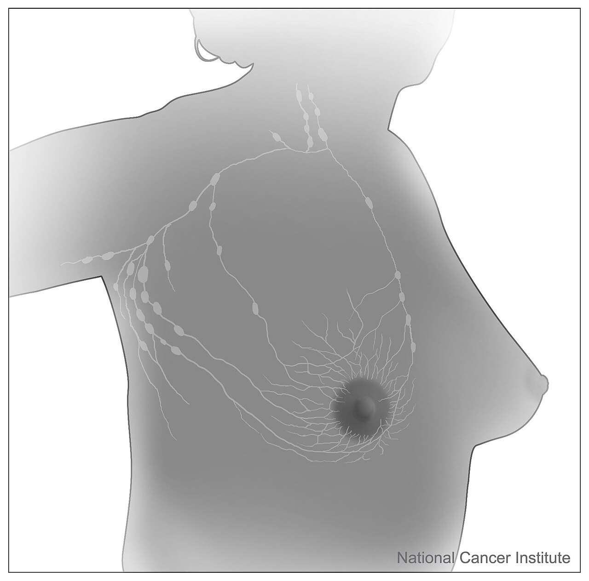
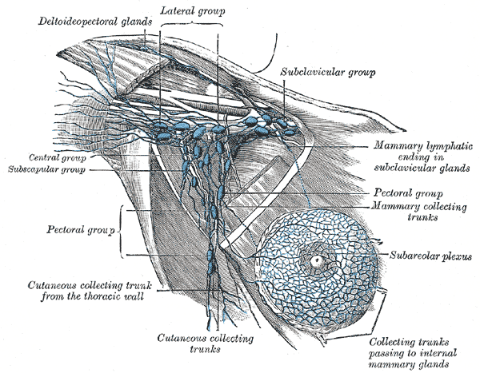
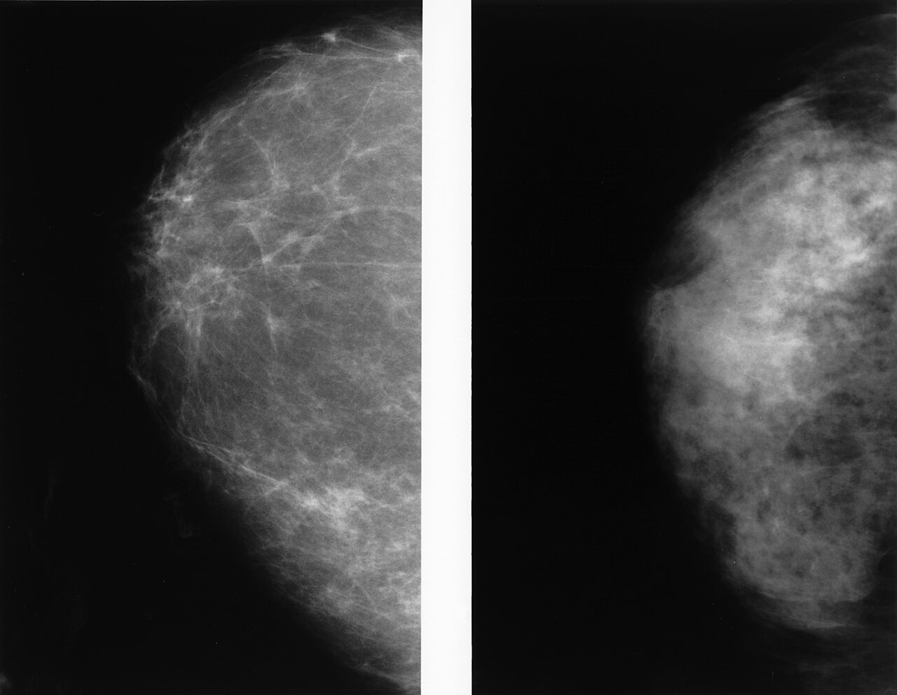
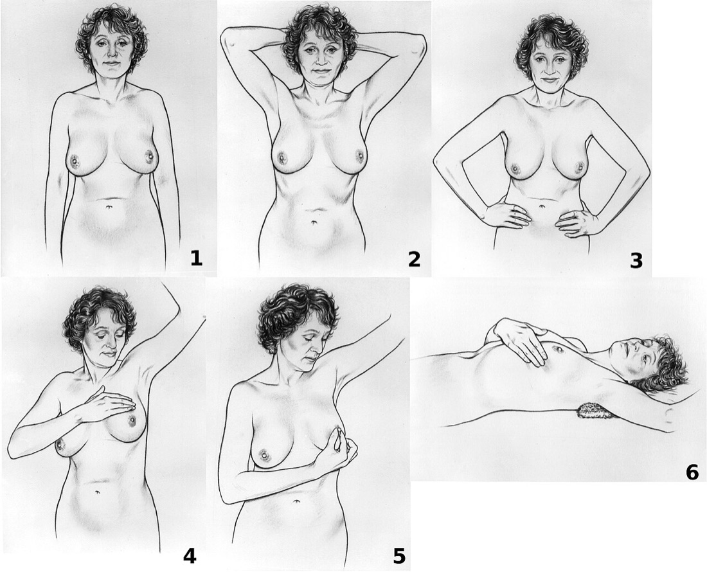
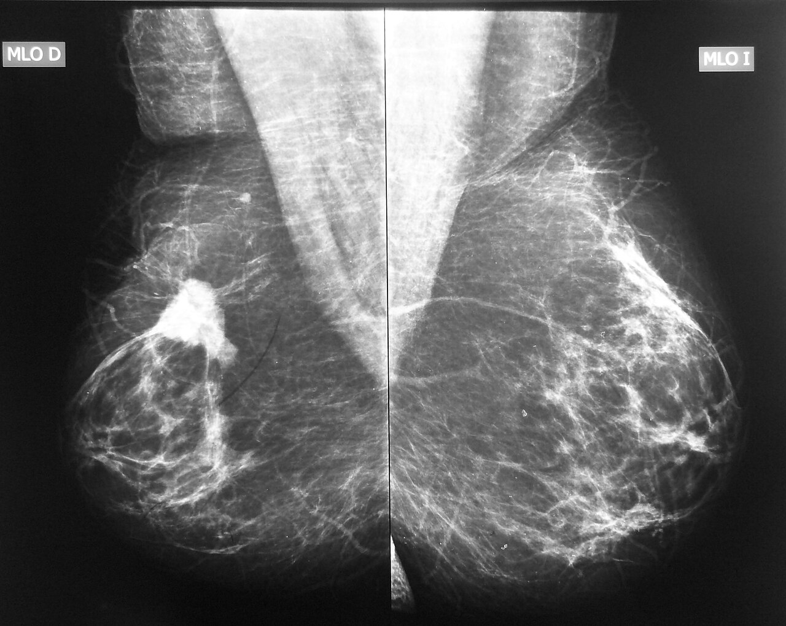
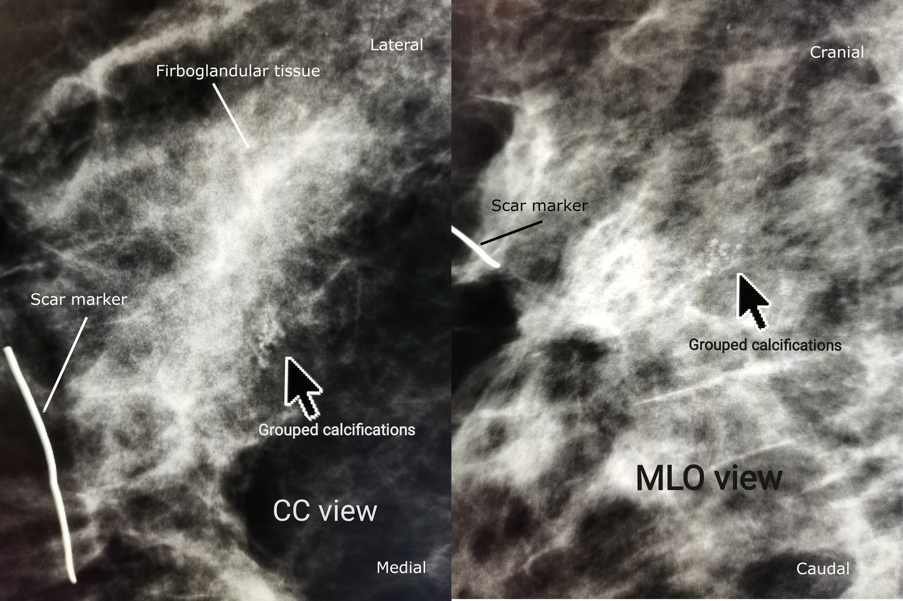
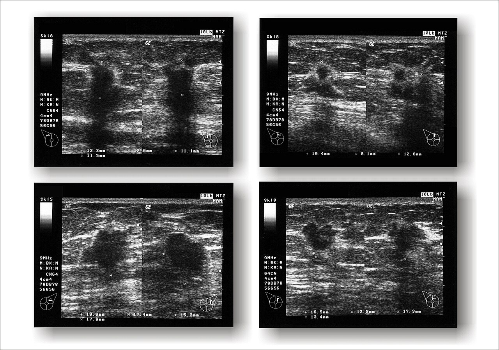
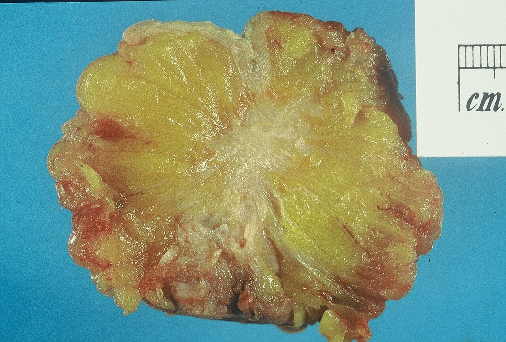
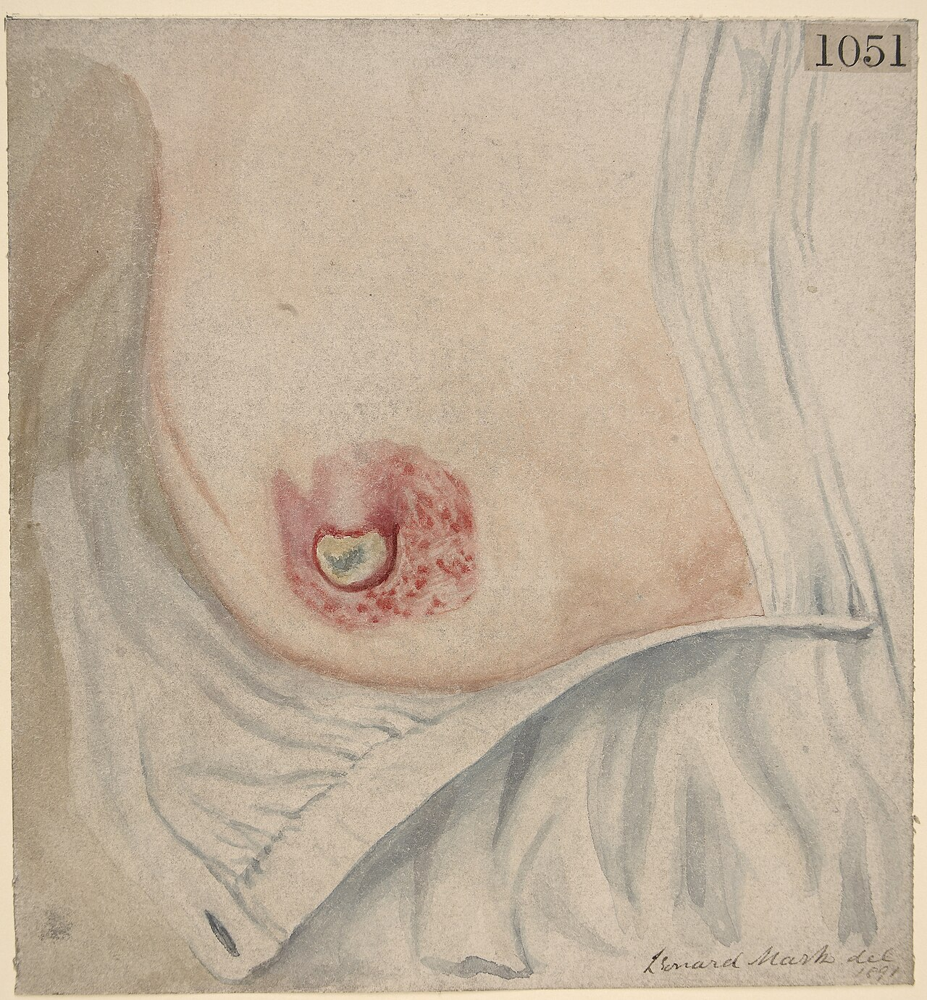

קרצינומה של השד
סיכון וסקר, הערכה משולשת, שלבים, ניתוח בשד ובבית השחי ועקרונות הטיפול המשלים
בסוף המפגש תדעו
- לתאר את ניקוז הלימפה של השד ואת שלוש הרמות של בית השחי
- למנות את גורמי הסיכון ולזהות מי בסיכון גבוה, כולל נשאות BRCA ביוצאי אשכנז
- לבדוק שד ובית שחי ולבנות הערכה משולשת: בדיקה, הדמיה וביופסיה
- להסביר את הבחירה בין שימור שד לכריתה ואת הטיפול בבית השחי, מבלוטת הזקיף ועד הוויתור עליה
- להכיר את עקרונות הטיפול המשלים לפי סוג הגידול: הורמונלי, HER2 ומשולש שלילי
לאן הלימפה של השד מנקזת

👆 לחצו על אזור בציור כדי לקרוא עליו
לימפה מהעור עוברת למקלעת שמתחת לפטמה ולעטרה ומשם לשד ולבית השחי. לכן הזרקה של חומר סימון מתחת לעטרה או לעור מגיעה כמעט רק לבית השחי.
70–80% מהלימפה של השד מגיעה לבית השחי. רמה I לטרלית לשריר החזה הקטן, רמה II מאחוריו (כולל בלוטות Rotter בין שני שרירי החזה). בלוטת הזקיף נמצאת בדרך כלל ברמה I.
מדיאלית לשריר החזה הקטן, עד הרצועה הקוסטו-קלביקולרית (Halsted). שם הווריד האקסילרי נכנס לבית החזה והופך לווריד התת-בריחי.
ממשיכות את רמה III, אבל נמצאות מחוץ לגבולות בית השחי. מעורבות קלינית שלהן היא חלק מההגדרה של מחלה מתקדמת מקומית.
ליד עצם החזה. הניקוז העיקרי ב-2–3% מהמטופלות ומסלול משני לצד בית השחי בכ-20%. מעורבות קלינית כאן היא מחלה מתקדמת מקומית.
הרמות והעצבים שחייבים לשמור
- גבולות הניתוח בבית השחי: שריר החזה הגדול מלפנים, ה-latissimus dorsi מאחור, דופן החזה מדיאלית והווריד האקסילרי למעלה
- העצב החזי הארוך (long thoracic): צמוד לדופן החזה, מעצבב את ה-serratus anterior. פגיעה בו גורמת לשכמה מכונפת
- העצב התורקודורזלי: חוצה את בית השחי אל ה-latissimus dorsi ביחד עם כלי הדם. שומרים עליו
- הצרור הפקטורלי המדיאלי: מעצבב את שריר החזה הגדול. סימן דרך טוב: הווריד האקסילרי נמצא מעליו ועמוק ממנו
- עצבי intercostobrachial: חוצים את בית השחי לרוחב. חיתוך שלהם גורם לחוסר תחושה בזרוע הפנימית ולפעמים לכאב כרוני. מסבירים על כך לפני הניתוח

מי חולה בסרטן שד
- גיל: גורם הסיכון החשוב ביותר. פחות מ-2% מהמקרים לפני גיל 20
- חשיפה להורמונים: וסת ראשונה לפני 11, בלות אחרי 55, לידה ראשונה אחרי 30 או בלי לידות. כל 12 חודשי הנקה מורידים את הסיכון ב-4%
- טיפול הורמונלי בבלות: ב-WHI היו 245 מקרים עם אסטרוגן ופרוגסטרון לעומת 185 בפלצבו
- הקרנה לבית החזה לפני גיל 30 (למשל בלימפומה): סיכון פי 2–4, שמתחיל לעלות כ-8 שנים אחרי ההקרנה
- משפחה: קרובת דרגה ראשונה אחת: פי 1.5. יותר מאחת: פי 2–4
- ממצאים בביופסיה: שינוי שגשוגי בלי אטיפיה פי 1.3–1.9. אטיפיה (ADH/ALH) פי 4–5. LCIS קלאסי פי 7, כ-1% בשנה
- שד צפוף (BI-RADS C–D): פי 1.5–2 וגם מסתיר ממצאים בממוגרפיה
- אורח חיים: השמנה, אלכוהול, עישון, חוסר פעילות ועבודת לילה. כ-30% מהמקרים אחרי הבלות קשורים לגורמים שאפשר לשנות
BRCA ומה עושים עם סיכון גבוה
- נשאיות BRCA1/2: סיכון לסרטן שד מעל 60% לאורך החיים. שחלה: 39–58% ב-BRCA1 ו-13–29% ב-BRCA2
- מוטציות מייסד ביוצאי אשכנז: שתיים ב-BRCA1 (יחד כ-1.0%) ואחת ב-BRCA2 (כ-1.4%). באוכלוסייה הכללית בארה״ב: כ-1 ל-1,000
- גידול ב-BRCA1 הוא בדרך כלל בדרגה גבוהה ומשולש שלילי. ב-BRCA2 לרוב רגיש להורמונים
- בדיקה גנטית: אבחנה לפני 50, משולש שלילי, כמה גידולים ראשוניים, סרטן שד בגבר, מוצא יהודי אשכנזי, או סיפור משפחתי מתאים
- גנים נוספים בפאנל: PALB2, CHEK2, ATM, TP53, PTEN, CDH1. על וריאנט בעל משמעות לא ידועה (VUS) לא פועלים
ממוגרפיה: מי, מתי ומה היא מפספסת
- הנתונים מ-8 מחקרים אקראיים עם כמעט 650,000 נשים
- סיכון ממוצע: הספר ממליץ על ממוגרפיה מגיל 40 בכל שנה, כל עוד האישה מתאימה לניתוח. USPSTF: מגיל 40 כל שנתיים. ההחלטה משותפת עם המטופלת
- שתי תמונות בכל צד: MLO ו-CC. בממוגרפיה אבחנתית מוסיפים תמונות לפי הצורך
- צפיפות השד: A שומני עד D צפוף מאוד. בשד צפוף יש שמוסיפים אולטרסאונד או MRI
- אולטרסאונד כתוספת: עוד 4.2 גידולים לכל 1,000 נשים בסיכון גבוה, אבל יותר תוצאות חיוביות כוזבות. אין הוכחה שהוא מוריד תמותה

איך בודקים שד ובית שחי
בישיבה · הסתכלות
- א-סימטריה, גוש נראה, שקע בעור, כיב. אור צדדי מגלה שקע עדין
- ידיים למעלה ואחר כך ידיים על המותניים (כיווץ שרירי החזה) מבליטים שקע ומשיכה
- פטמה: משיכה פנימה חדשה וחד-צדדית מחשידה. פריחה שמתחילה בפטמה: Paget. אקזמה מתחילה בעטרה
- בלוטות: בית השחי כשהבודק תומך בזרוע ואחריו מעל ומתחת לעצם הבריח
בשכיבה · מישוש
- יד מעל הראש, מישוש כנגד דופן החזה בכל הרביעים ומתחת לפטמה
- מתארים גוש: גודל, צורה, עקביות, מיקום (שעה ומרחק מהפטמה), קיבוע לעור או לשריר
- שפיר: תחום וזז. סרטן: קשה, פחות תחום וגורר איתו רקמה. רגישות במישוש לא עוזרת באבחנה

גוש בשד: הערכה משולשת
- 75–80% מהממצאים הלא נמושים שנשלחים לביופסיה הם שפירים. לכן מתחילים בפעולה הפחות פולשנית
- פחות מ-10% מהביופסיות במחט עבה לא חד-משמעיות ומחייבות ביופסיה ניתוחית
- ביופסיה בשאיבה (FNA): לא מבדילה בין גידול חודרני ללא חודרני. שימושית לבלוטה חשודה (רגישות כ-90%, סגוליות עד 100%) ולמוקד שני באותו שד
- MRI: בלוטה חיובית בלי גידול נראה, Paget, גידול לובולרי, תגובה לטיפול טרום ניתוחי. אין הוכחה שהוא משפר הישנות או הישרדות כשמשתמשים בו לתכנון הניתוח
- ביופסיה ניתוחית כצעד ראשון מייקרת ומעכבת את הניתוח הסופי
סרטן שד בהדמיה



לא כל סרטן שד אותו סרטן
- DCIS: תאים ממאירים בתוך הצינור, בלי חציית קרום הבסיס. אין גישה ללימפה ולדם
- דוקטלי חודרני: השכיח ביותר (50–70%). גוש מגובש שנמוש ונראה בממוגרפיה
- לובולרי חודרני (5–15%): תאים בשורה אחת, אובדן E-cadherin (CDH1). מתפשט בשקט ומתגלה מאוחר
- דרגה (Nottingham): מבנה בלוטי, צורת הגרעין וחלוקות. סכום 3–5 דרגה 1, 8–9 דרגה 3
- קולטנים: ER/PR חיובי מעל 1% מהתאים. HER2 מוגבר בכ-20%: צביעה 3+ חיובי, 2+ לא חד-משמעי ובודקים ISH
- תת-סוגים: לומינלי A (40–60%), לומינלי B (20–30%), HER2 (10–20%), בזאלי, לרוב משולש שלילי (10–20%)
- מבחן 21 גנים (Oncotype DX): ציון 1–100 שמנבא הישנות ותועלת מכימותרפיה בגידול ER חיובי

שלב, צוות רב-תחומי וסדר הטיפולים
- TNM לפי AJCC מהדורה 8: גודל הגידול ומעורבות מבנים סמוכים, בלוטות, גרורות. נוספו דרגה, ER/PR/HER2, ציון גנומי ותגובה לטיפול טרום ניתוחי
- קליני מול פתולוגי: cTNM לפני הטיפול, pTNM אחרי הניתוח. האות y מסמנת שלב אחרי טיפול טרום ניתוחי
- בירור גרורות (CT, מיפוי עצמות) רק כשיש בלוטות חיוביות בבדיקה, תסמינים, בדיקות דם חריגות, מחלה מתקדמת מקומית או דלקתית
- מחלה מתקדמת מקומית: גידול מעל 5 ס״מ, מעורבות דופן החזה או העור, סרטן דלקתי, בלוטות מקובעות, בלוטות ממאריות פנימיות או על-בריחיות
שימור שד: למי ואיך
- שימור שד = כריתה חלקית + הקרנה. בלי הקרנה זה לא אותו טיפול
- מה בודקים: נכונות ויכולת לקבל הקרנה, יחס בין גודל הגידול לגודל השד, מוקדים בכמה רביעים, העדפת המטופלת. אין מגבלת גיל
- שוליים: בגידול חודרני מספיק "אין דיו על הגידול". ב-DCIS 2 מ״מ
- גידול לא נמוש: סימון לפני הניתוח (תיל, זרע מגנטי או רדיואקטיבי, אולטרסאונד) וצילום של התכשיר בחדר הניתוח
כריתת שד: מתי וסוגי הכריתה
מתי כריתה
- גידול גדול ביחס לשד
- הסתיידויות נרחבות בממוגרפיה
- אי אפשר להשיג שוליים נקיים
- התווית נגד להקרנה
- בחירה של המטופלת, או נשאית מוטציה שבוחרת גם בכריתה מונעת של הצד השני
בלוטת זקיף ומתי מוותרים על ריקון
- הטכניקה: טכנציום וצבע כחול (או ICG, חלקיקים מגנטיים). גשש גמא, בממוצע 2–3 בלוטות. ניתוח יום, בלי נקז
- ריקון בית השחי עדיין נדרש: סרטן דלקתי, מחלה מתקדמת מקומית, יותר מ-3 בלוטות חיוביות, זקיף חיובי בלי הקרנה מתאימה, זקיף או TAD חיוביים אחרי טיפול טרום ניתוחי
- המחיר של ריקון: כאב, הגבלה בכתף ובצקת לימפתית בזרוע. בשילוב הקרנה יש סדרות שמדווחות עד 80%
- לוותר לגמרי: ב-SOUND (גידול cT1 ואולטרסאונד תקין) הישרדות בלי גרורות 98.0% בלי ניתוח בבית השחי לעומת 97.7% עם זקיף. בגיל 70 ומעלה עם גידול הורמונלי מוקדם לא עושים זקיף כשגרה
DCIS, סרטן דלקתי, Paget, גברים והריון

הקרנה וטיפול מערכתי לפי סוג הגידול
- טמוקסיפן 5 שנים: הישנות פחות ב-41%, תמותה פחות בכשליש
- אחרי הבלות: מעכבי ארומטאז (ATAC: הישרדות ללא מחלה טובה ב-17%)
- כימותרפיה לפי ציון 21 הגנים. בלי בלוטות: לא נותנים מתחת ל-25 מעל גיל 50 ומתחת ל-16 עד גיל 50
- טרסטוזומאב שנה (HERA: 46% פחות אירועים). לעקוב אחרי הלב
- גידול של 2 ס״מ ומעלה או בלוטות: טיפול טרום ניתוחי עם טרסטוזומאב ופרטוזומאב
- שארית בניתוח: T-DM1 (KATHERINE: סיכון נמוך בחצי)
- שלב II–III: כימותרפיה טרום ניתוחית עם פמברוליזומאב (תגובה מלאה 65% לעומת 51%)
- שארית בניתוח: קפציטבין
- נשאיות BRCA: אולפריב שנה (OlympiA)
פחות ניתוח, יותר ביולוגיה
5,502 נשים עם גידול T1–T2, בית שחי נקי בבדיקה ושימור שד. הישרדות ללא מחלה חודרנית ל-5 שנים 91.9% בלי זקיף לעומת 91.7% עם זקיף. פחות בצקת וכאב בזרוע. הישנות בבית השחי 1.0% לעומת 0.3%
Reimer T et al. N Engl J Med 2025;392(11):1051-10642,540 מטופלים עם 1–2 מקרו-גרורות, כולל כריתות שד וגידולי T3. הישרדות ללא הישנות ל-5 שנים 89.7% בלי ריקון לעומת 88.7% עם ריקון. כמעט 90% קיבלו הקרנה לבלוטות
de Boniface J et al. N Engl J Med 2024;390(13):1163-11751,174 מטופלות בשלב II–III. פמברוליזומאב עם כימותרפיה לפני הניתוח ואחריו: הישרדות ל-5 שנים 86.6% לעומת 81.7%
Schmid P et al. N Engl J Med 2024;391(21):1981-1991957 נשים עם DCIS בדרגה 1–2 ורגיש להורמונים. אחרי שנתיים: סרטן חודרני באותו שד ב-4.2% במעקב פעיל לעומת 5.9% בטיפול הרגיל. צריך מעקב ארוך יותר
Hwang ES et al. JAMA 2025;333(11):972-980חמישה דברים לקחת למחלקה
- כל גוש בשד מקבל הערכה משולשת: בדיקה, הדמיה וביופסיה במחט עבה ובודקים שהתוצאות מתאימות זו לזו
- יוצאת אשכנז עם סיפור משפחתי, אבחנה צעירה או גידול משולש שלילי: להפנות לייעוץ גנטי
- שימור שד עם הקרנה שווה בהישרדות לכריתה. השוליים בגידול חודרני: אין דיו על הגידול
- בית השחי עבר מריקון לבלוטת זקיף והיום לפעמים בלי ניתוח בכלל. בסרטן דלקתי עדיין מרוקנים
- הקולטנים (ER/PR, HER2) קובעים את הטיפול המשלים ולעיתים גם שהטיפול יתחיל לפני הניתוח